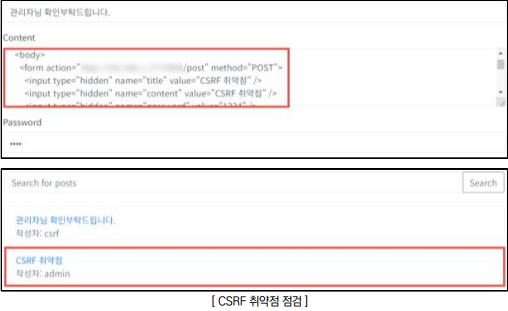
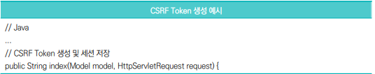
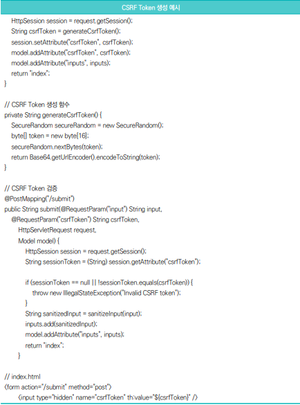
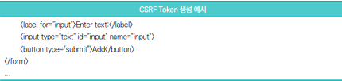

점검 목적
- 사용자가 인증된 세션을 가진 상태에서 공격자가 의도한 위조 요청이 전송‧처리되지 않도록 하여
비정상적인 상태 변경을 방지하기 위함
- 공격자는 사용자가 로그인된 세션을 악용하여 인증정보 없이도 위조된 요청을 전송할 수 있음. 이로 인해 사용자의 의도와 무관하게 비밀번호 변경, 계좌 이체, 게시글 삭제, 개인정보 수정 등 권한 있는 사용자가 수행할 수 있는 행위가 공격자에 의해 실행될 수 있음
CSRF란?
- 사용자가 자신의 의지와 무관하게 공격자가 의도한 행위(수정, 삭제, 등록 등)를 특정 웹사이트에 요청하게 하는 공격 유형으로, 사용자의 인증된 세션을 악용하여 비인가된 행위 수행 가능
판단 기준
- 양호 : 중요한 요청(비밀번호 변경, 송금 등)에 대해 CSRF 방어 토큰이 적용되어 있으며, 토큰 검증이
정상적으로 수행되는 경우
- 취약 : 중요한 요청에 대해 CSRF 토큰이 없거나, 토큰 검증을 수행하지 않아 인증된 사용자의 요청
위조가 가능한 경우
조치 방법
- 중요한 요청에는 CSRF 방어 토큰을 포함하고, 서버 측에서 해당 토큰의 유효성을 검증하도록 설정하며, Referer/Origin 헤더 검증 및 SameSite 쿠키 옵션을 활용하여 불필요한 외부 도메인 요청이 차단되도록 구성
점검 방법
Step 1) 크로스사이트 스크립팅(XSS) 취약점 존재 여부 확인 후 데이터 수정 기능(게시글 등록, 비밀번호 변경 등)이 존재하는 요청(Request) 정보를 분석하여 임의의 명령을 수행하는 스크립트 삽입 후 해당 게시글을 타 사용자가 열람하였을 경우 타 사용자의 권한으로 해당 스크립트의 실행 유무 확인

조치 방법
1. 주요 변경 요청(비밀번호 변경, 송금, 개인정보 수정 등)에 대해 CSRF 토큰을 발급하고 요청 시 토큰을 반드시
포함하도록 구현
2. 서버 측에서 CSRF 토큰의 유효성을 검증하여 토큰이 누락되거나 위조된 요청은 차단하도록 설정
3. Referer 및 Origin 헤더 검증을 통해 외부 사이트에서 발생한 요청 차단
4. SameSite 쿠키 옵션을 적용하여 외부 사이트에서 인증 쿠키가 자동 전송되지 않도록 설정
5. HTTPS 환경에서 쿠키에 Secure, HttpOnly 속성을 적용하여 세션 탈취 및 악용 가능성 최소화
CSRF Token
- 서버에서 생성한 고유하고 예측 불가능한 값으로 각 사용자 세션 또는 요청마다 생성되며 생성된 Token은 클라이언트의 요청에 포함되어 서버로 전송되고 서버는 이를 검증하여 요청의 정상 여부 판단
  